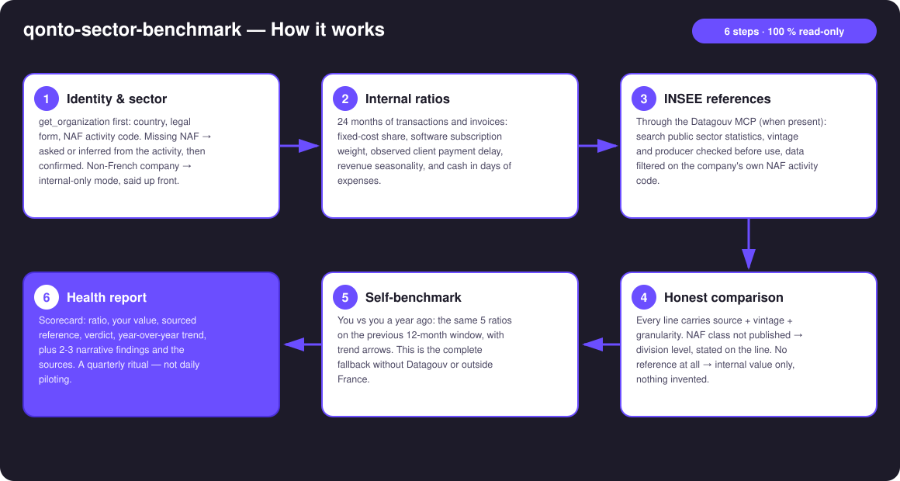
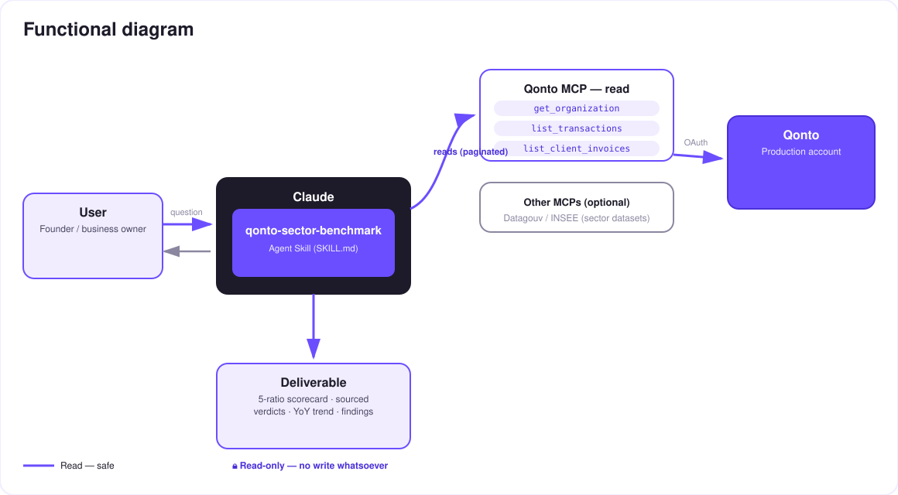

"Am I normal?" — your real ratios next to your sector's official statistics.
"Am I normal?" is the question every founder quietly asks and never gets answered. You feel your costs are heavy or your clients pay slowly — but heavy compared to what? The skill answers in one prompt:
Fixed-cost share, software subscriptions, observed client payment delay, revenue seasonality, cash in days of expenses — computed from the Qonto account.
French public statistics (INSEE structural data, payment delays) fetched live through the Datagouv MCP, at the finest NAF level available.
Every comparison carries source + vintage + granularity. No exact dataset → one level up, stated. A figure is never made up.
A temporal self-benchmark ("you, a year ago") computed every time — also the full fallback without Datagouv or outside France.
Typical output: "your clients pay you at 38 days; the sector median is 51 — you collect faster than your peers" / "your fixed costs weigh 61 % vs ~45 %: that's where to dig." Would someone use this on a Monday morning? It's the quarterly Monday — the one where you ask how the business is really doing.
| Prerequisite | Detail | Required |
|---|---|---|
| Qonto production account | Adapts to any organization — get_organization first, nothing hardcoded | ✅ |
| Country | Sector comparison: France only (INSEE). Other Qonto countries (DE, ES, IT…): internal ratios + self-benchmark, never mapped onto French data | ℹ️ detected |
| Qonto MCP connected | Official connector (claude.ai / Claude Desktop), OAuth login | ✅ |
| Datagouv MCP | Detected dynamically: present → live sector references; absent → the skill says so and switches to self-benchmark mode | ⭕ recommended |
| NAF activity code | Read from get_organization when exposed; otherwise asked or inferred from the activity and confirmed | ⭕ |
| ≥ 12 months of history | Seasonality needs a full year; self-benchmark ~24 months. Below: computes what it can, tags the rest unavailable | ⭕ |

list_cash_flow_categories returns 403 on the claude.ai connector — classification via recurrence detection + labels insteademitted_at vs settled_at); pagination ≤ 50 everywhere
Zero writes, by design: the skill only reads — the Qonto account on one side, public open data on the other. Nothing to approve, nothing that can move. The only "risk" here is statistical, and it's handled by the golden rule: source + vintage + granularity on every figure, or no figure at all.
| Ratio | Computation (Qonto data) | Sector reference |
|---|---|---|
| Fixed-cost share | Recurring debits (normalized counterparty, amount stable ±10 %, ≥ 3 hits) ÷ total debits, 12 months | Cost structure by NAF (INSEE Ésane) |
| Software subscription weight | Recurrences whose counterparty matches SaaS patterns ÷ total debits — detected list shown, correctable | Order of magnitude by NAF division when published; otherwise internal value only |
| Client payment delay | Median invoice issue → observed payment (list_client_invoices + transaction matching) | Average payment delays by sector and size, when the dataset exists |
| Revenue seasonality | Coefficient of variation of monthly receipts over 24 months + peak/trough months | Sector activity indices when available; otherwise self-benchmark |
| Cash in days of expenses | Consolidated balance ÷ average daily debits (12 months) | Mostly temporal (you vs you) — little reliable public reference, and the skill says so |
| Reference | What it provides | Granularity | Known pitfall |
|---|---|---|---|
| INSEE Ésane (structural business statistics) | Margin rates, cost structure, sector ratios | NAF class (fine) or division (announced fallback) | Vintage lags 2–3 years — always printed |
| Payment-delay datasets (data.gouv.fr) | Average/median payment delays by sector and size | Varies by producer — checked via get_dataset_info | Prefer official producers over third-party uploads |
| Datagouv MCP access chain | search_datasets → get_dataset_info → query_resource_data | Filtered on the company's NAF code | Non-tabular/oversized resource → try another resource, never a number from memory |
| Output | Format | When |
|---|---|---|
| Conversation reply | Markdown scorecard: ratio · your value · reference (source · vintage · granularity) · verdict · year-over-year trend, + narrative findings + sources | Always — the baseline |
| Interactive scorecard | HTML file/artifact: 5 gauges against the sector ranges, sources footnoted | When the host renders files (claude.ai artifacts, Claude Desktop, Claude Code); automatic fallback to markdown |
The ≤ 3-minute demo attached to the PR walks through: the "am I normal?" question → real ratios computed → sourced INSEE references → the reveal ("I thought I was overpaying for software; turns out I'm below the sector median. But my clients pay me 13 days slower than average — THAT is my real problem") → the final health report. It runs live on a real production account.
| Idea | Effort | Note |
|---|---|---|
| Size-adjusted references (NAF × headcount/revenue bracket) | Medium | INSEE publishes some breakdowns by company size — an even fairer comparison |
| Country modules (Destatis DE, INE ES, ISTAT IT…) | High | Same architecture, one open-data connector per country |
| Check-up history: trajectory across 4–8 quarters | Low | Reuses the self-benchmark engine, simple run memory |
| Anonymized peer-basket benchmark | High | Beyond the current MCP — a Qonto product idea more than a skill |
qonto-ceo-cockpit